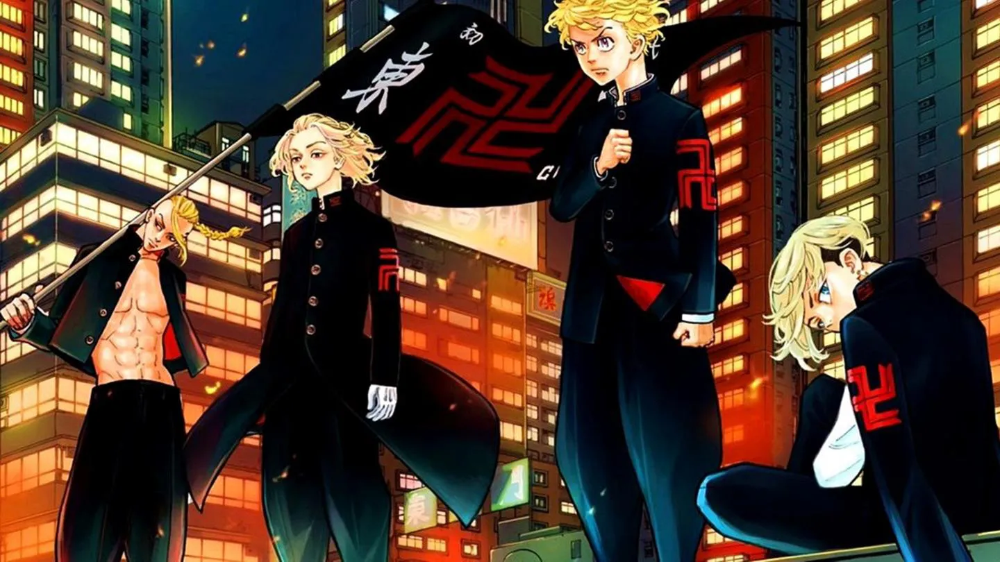
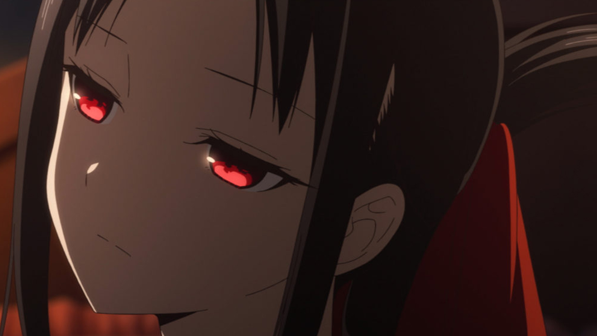

En el número más reciente de la revista Weekly Shonen Jump, se informó que la serie de manga escrita e ilustrada por Kohei Horikoshi, Boku no Hero Academia (My Hero Academia) , entró formalmente en su arco final con el lanzamiento del capítulo número 306.
El manga de Tokyo revengers y su arco final

En pleno apogeo de popularidad de la serie de Tokyo Revengers, Ken Wakui anuncia en la última página del capítulo 207 que Tokyo Revengers se adentra en su último arco argumental. Lo hará a partir del capítulo 208, cuya publicación tendrá lugar el próximo 2 de junio en las páginas de la Weekly Shônen Magazine.
Kaguya-Sama: La historia de Kaguya y Shirogane se encuentra cada vez más cerca de alcanzar su conclusión definitiva

Kaguya-sama: Love is War es, indudablemente, una de las historias de slice-of-life, romance y comedia de mayor éxito en la última década. Aka Akasaka logró dar con la tecla desde el primer instante, y no solo por las constantes idas y venidas de Kaguya y Shirogane, sino porque incluso los personajes secundarios aportan historias y momentos de enorme valor. Desafortunadamente, el final del relato está ya más cerca que nunca.